近线画布用户指南
如有任何疑问，请联系 产品：@杜思思研发：@姜涛@葛磊@秦银@储召杨@田雨鸣
一、近线画布概述
1. 什么是近线决策
近线基于Flink计算引擎，消费流式数据进行分钟级识别决策，支持单事件和多事件处理，支持单流分析和多流关联。
- 多事件决策：依赖单事件不足以识别风险，需要融合多事件信息或者进行数据增强后综合决策，例如基于用户行为序列识别作弊风险。
- 分秒级时效：离线策略/模型检出时效性差，可能导致漏过或者影响用户体验，实时（毫秒级识别）又无法实现复杂的决策逻辑。
- 短周期回溯：识别出风险后，希望对历史短周期（分钟/小时）的流量进行快速的回溯处置，离线处置无法满足时效需求，例如识别高危设备后对近期登录过的账户进行冻结。
2. 什么是近线画布
近线画布是使用近线决策引擎的一种策略配置方式，让用户可以在一个页面通过拖拉拽的方式完成模型配置-仿真测试-任务启动-状态感知-告警通知的全流程。
画布与场景的区别？
场景：针对某种风险的实时建模单元，内含多个规则、决策。
画布：针对某种风险的近线建模单元，内含多事件加工、规则、决策。
3. 为什么要做近线画布
【背景】
|
for 基础安全 用户 |
for 非基础安全其他 用户 |
|---|---|
|
|
画布好在这些地方...
- 拖拉拽低代码配置，上手成本低通过拖拉拽组件至画布中，并自由连接各个组件模块，配置符合策略执行顺序的可视化图链路
- 仿真测试调试透明，debug更清晰通过展示图中每个节点算子的输入输出字段，更清晰的明确数据流的流转的形式
- 作业异常告警分级，排查效率更高通过划分不同作业优先级，配置给不同作业队列资源保障及响应速度，让资源和人力用在刀刃上
因此，Zeus开始探索让用户实现在一个页面完成复杂模型的配置-测试灰度-计算任务自启动-模型运行状态感知-告警通知的全链路。但客观来讲，画布不是绝对优于场景规则。画布的缺乏整体视角，而场景规则的某一场景下配了几条策略场景规则配置会较为清晰，用户需结合自己的使用习惯及实际需求选择某种配置方式
4. 近线画布生态概览
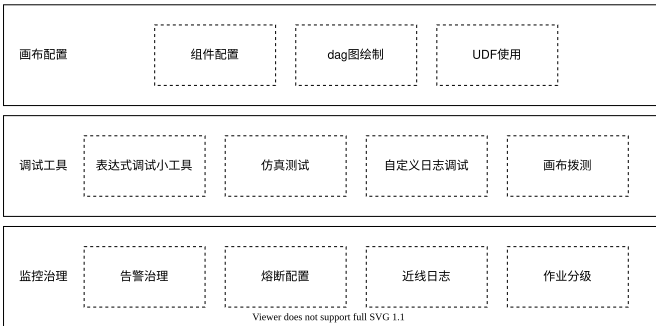
二、名词解释
|
名词 |
解释 |
|---|---|
|
画布 |
策略部署的一种模式，用户可以在画布中通过拖拽的方式自定义配置一条数据处理流，以多个数据源组件作为起始，以多个决策类组件作为终止。当用户完成策略的配置之后，画布会自动生成一个flink任务用来执行用户所配置的逻辑。 |
|
组件 |
组成画布的功能块，包括常规的流数据处理（join,groupby,distinct，数据拆分等）逻辑判断（if-else等），规则与自定义代码执行，决策（金丝雀告警，落kafka，丢弃等）。 |
|
熔断配置 |
基于画布组件/组件内规则 配置的熔断内容，包括熔断对象（组件/组件内的规则）、熔断作用时间、熔断监控规则、告警人等。 |
|
仿真测试 |
通过输入单条/批量的mock数据，展示画布策略全链路执行情况及单个流程节点命中详情 |
|
画布拨测 |
用户自定义流量调用画布获取决策，判断结果是否满足用户诉求的任务配置，确保线上环境作业的有效性 |
三、操作与功能说明
- 五分钟快速上手
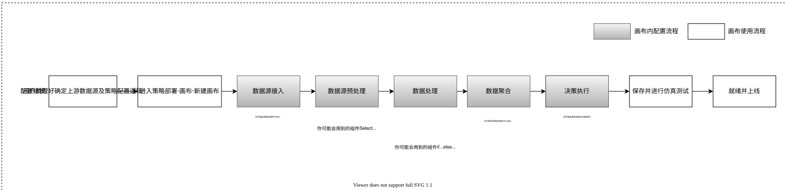
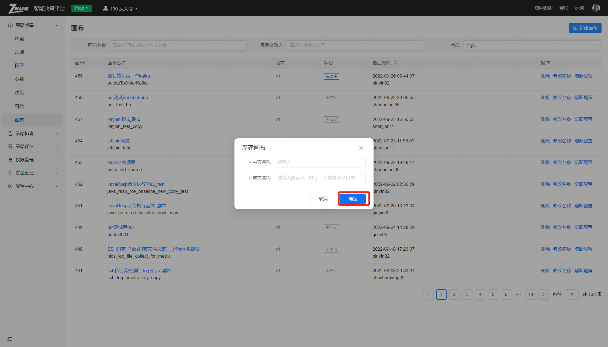

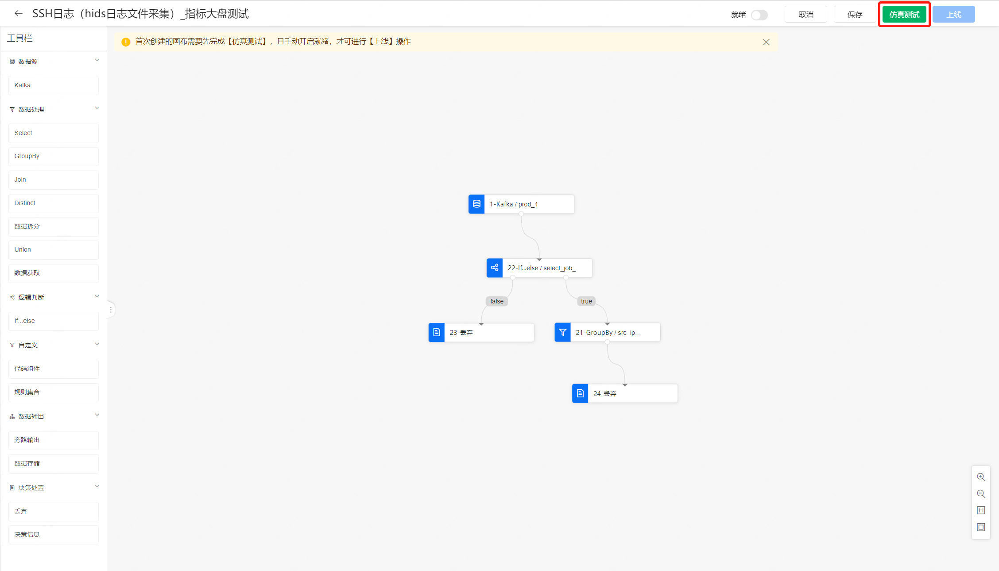
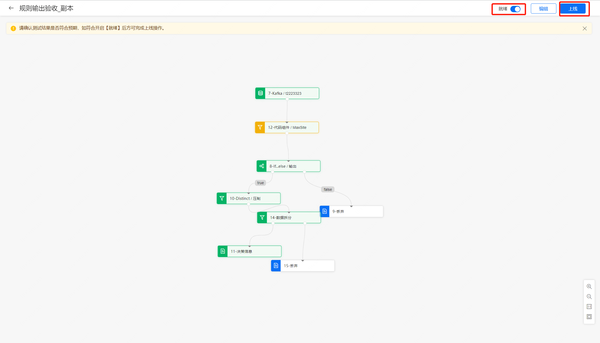

3.1 事前准备
若有基于风控相关的需求想接入使用画布功能，请完成以下步骤开通使用：
- 整理业务具体画布使用场景及需求文档，联系近线画布产研@杜思思@姜涛评估是否可以接入使用
-
评估通过后，按照以下格式发送邮件，经上级批准后由值班研发处理开通
邮件格式
收件人：申请人直属上级
抄送人：杜思思（dusisi）、刘思淼（liusimiao）、龙含嫣（longhanyan）、金丽丹（jinlidan）、郭东方（guodongfang02）、姜涛（jiangtao59）
具体格式如下：
a.邮件标题：【Zeus画布使用权限申请】申请部门+申请人 例：【Zeus画布使用权限申请】美团/基础研发平台/信息安全部/风控和业务安全/平台和数据产品 +刘思淼
b.邮件正文：
-
申请人MIS号：
-
申请人部门：（举例：美团/基础研发平台/信息安全部/风控和业务安全/平台和数据产品 ）
-
需求背景：说明此需求来源的背景以及用途；
-
需求说明：说明使用画布的用途；
-
- 准备万象组id、名称及实时计算队列资源（单位CU，若业务无自身队列资源，可估算预计使用情况向Zeus申请资源使用），提供给值班近线@Zeus研发完成画布空间开通
资源预估方法
- 基于数据分区数量的粗略估计
CU数量 = MAX（多个Kafka Topic分区数量） 查询kafka分区数量
3.2 画布使用
3.2.1 数据源接入
- 目的：确定该画布作业输入的数据来源。当前支持Kafka、Mafka消息接入
|
Kafka |
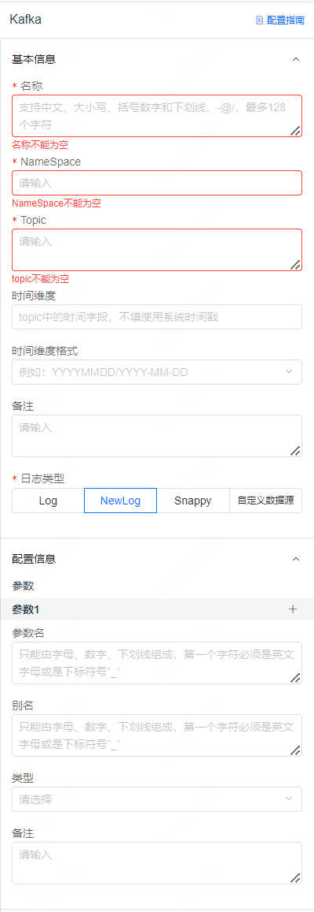 |
示例https://zeus.sankuai.com/data_zeus_static/#/paint/detail?id=47&version=15组件1 【配置相关】
|
|
Mafka |
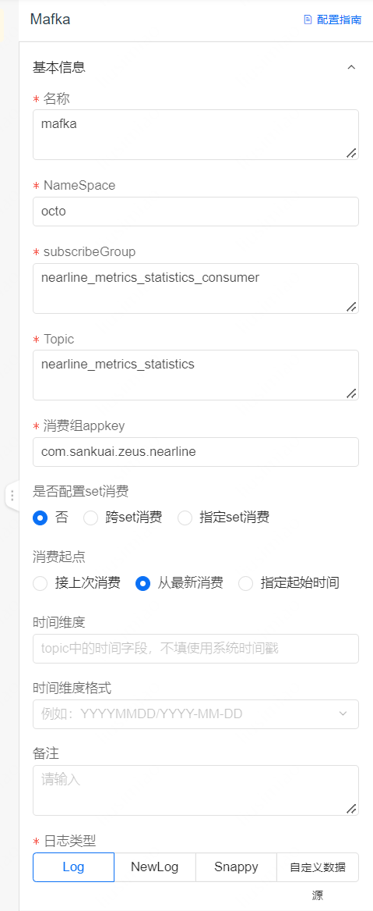 |
待上线功能（预计11月底上线，敬请期待~）
【配置相关】
|


3.2.2 数据源预处理
- 目的：对数据源中的数据进行初步补充、筛选及过滤
|
Select |
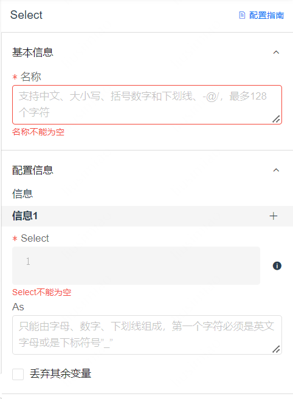 |
简单逻辑，可以用Select组件（aviator语法），exp-5支持比较复杂的语法 示例：https://zeus.sankuai.com/data_zeus_static/#/paint/detail?id=47&version=15 组件17 【配置相关】
|
|
代码组件 |
|
复杂逻辑，可以用代码组件（java语法） 示例 https://zeus.sankuai.com/data_zeus_static/#/paint/detail?id=107&version=11 组件26 【常见使用场景】
【配置相关】
|
|
规则集合 |
|
示例https://mis.zeus.rc.st.sankuai.com/data_zeus_static/#/paint/detail?id=76&version=1组件2 【常见使用场景】
【配置相关】
|
|
数据获取 |
|
http get: https://mis.zeus.rc.st.sankuai.com/data_zeus_static/#/paint/detail?id=166&version=1 http post: https://mis.zeus.rc.st.sankuai.com/data_zeus_static/#/paint/detail?id=173&version=1 rpc : https://mis.zeus.rc.st.sankuai.com/data_zeus_static/#/paint/detail?id=175&version=1 【常见使用场景】
【配置相关】 
|


3.2.3 数据处理
|
if...else |
|
示例https://mis.zeus.rc.st.sankuai.com/data_zeus_static/#/paint/detail?id=79&version=6组件3 【配置相关】
|
|
groupby组件 |
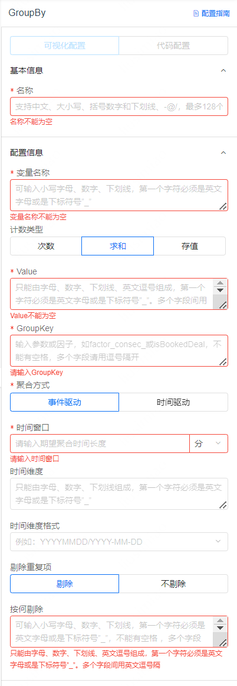 |
示例https://mis.zeus.rc.st.sankuai.com/data_zeus_static/#/paint/detail?id=73&version=21组件4 【常见使用场景】
【配置相关】
|
|
Join |
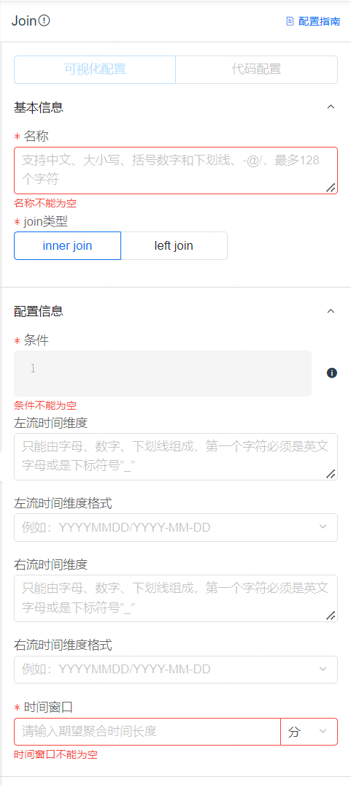 |
【常见使用场景】
【配置相关】
|
|
代码组件 |
|
复杂逻辑，可以用代码组件（java语法） 示例 https://zeus.sankuai.com/data_zeus_static/#/paint/detail?id=107&version=11 组件26 【常见使用场景】
【配置相关】
|
|
数据拆分 |
|
将数据流复制后拆分流转至后续各节点 |
|
Union |
|
两个数据流的合并 |
|
数据获取 |
|
http get: https://mis.zeus.rc.st.sankuai.com/data_zeus_static/#/paint/detail?id=166&version=1 http post: https://mis.zeus.rc.st.sankuai.com/data_zeus_static/#/paint/detail?id=173&version=1 rpc : https://mis.zeus.rc.st.sankuai.com/data_zeus_static/#/paint/detail?id=175&version=1 【常见使用场景】
【配置相关】 
|
|
数据存储 |
|
将执行过程中某些关键数据进行外存 【常见使用场景】
【配置相关】 
|
|
丢弃组件 |
直接将该部分数据丢弃 |


3.2.4 数据聚合
-
目的：实现对决策对象的聚合、去重等操作
|
Groupby |
示例https://mis.zeus.rc.st.sankuai.com/data_zeus_static/#/paint/detail?id=73&version=21组件4 【常见使用场景】
【配置相关】
|
|
|
Distinct |
|
【常见使用场景】
【配置相关】
|

3.2.5 决策执行
|
决策 |
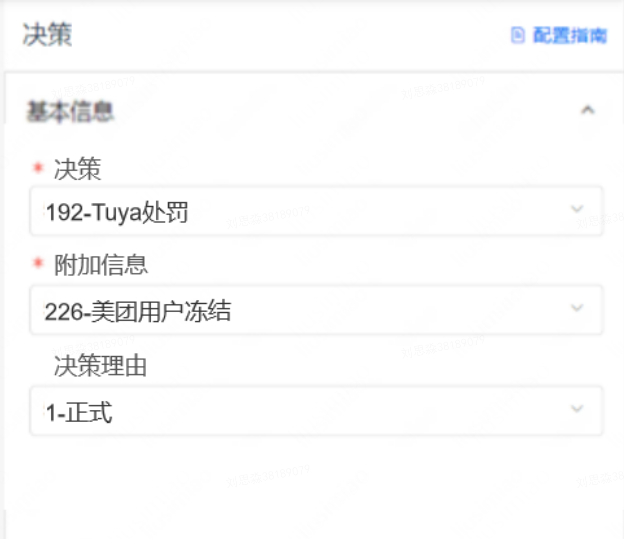 |
【配置相关】 用户可在决策组件中使用在Zeus平台上注册的决策及相关信息，近线将根据配置信息下游的数据传输，但是否能实际执行得看下游是否具备执行能力
|
3.2.6 用户自定义函数使用（UDF）
- 支持在平台管理用户自定义函数，并在画布aviator表达式中进行引用

3.3 画布调试
|
旁路输出 |
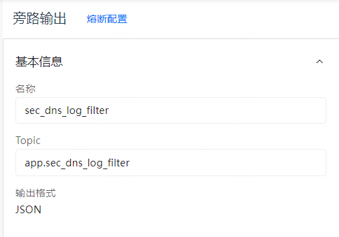 |
将流转至该节点的数据全部输出至指定topic 【常见使用场景】
【配置相关】 如何将topic转为hive：
|
|
仿真测试 |
|
说明文档待补充
【布控自助亮点】
|
|
自定义日志 |
|
|
|
画布拨测 |
待上线功能
|
|
|
表达式调试小工具 |
待上线功能
|


3.4 监控治理
|
告警治理 |
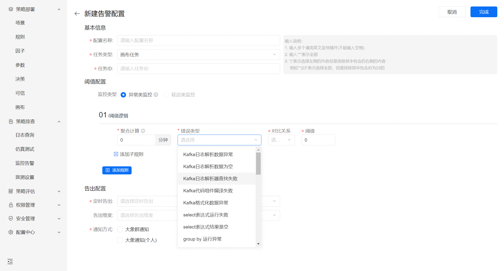 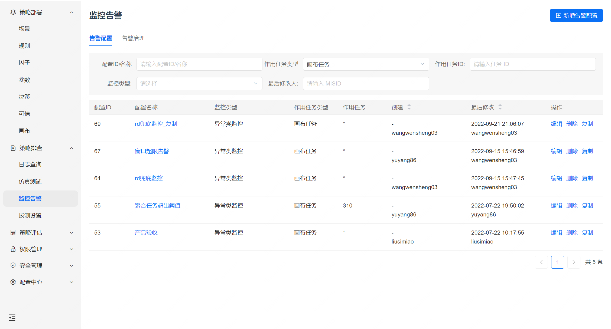 |
|
|
熔断配置 |
|
|
|
近线日志 |
|
|
|
作业分级 |
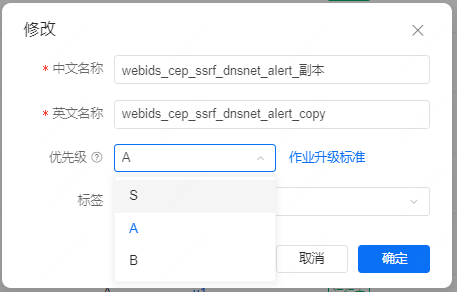 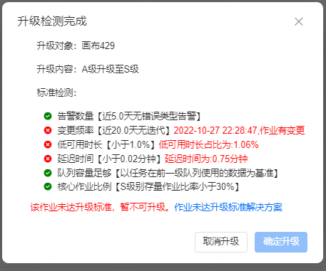 |
|


四、各业务画布使用最佳实践
- 基础安全最佳实践：学城文档 1332336758（无权限读取标题）限制权限文档，非基础安全同事请勿申请
- 账号安全最佳实践：画布最佳实践：账号安全
五、画布性能调优最佳实践
【同时，我们正在做...】
- 数据源自定义schema
- 自助性能调优工具，一期将聚焦于性能相关数据采集
六、FAQ
1.我更新完画布，版本显示生效但作业启动失败，过几分钟又通知作业启动成功是什么情况
现象：用户更新完画布->作业上线->zeus-mis侧显示版本生效，但是zeusRobot通知作业失败。过了几分钟，zeusRobot又通知，作业启动成功。
结论：
（1）我们调用rt平台的接口，启动作业，需要提交codeVersionID这个参数（即选择哪个代码分支启动）
（2）对于画布作业的更新，我们其实是会先去rt平台上查询作业上次用的代码版本，并将上次代码版本作为本次代码版本。（如果是第一次创建的作业，提交的代码分支是通过lion配置的）
（3）但是该作业上次运行的代码版本是一个特殊分支，已经被删除了，所以rt平台在执行作业时，失败了。
这里有两个问题：
（1）rt平台上作业执行失败了，为什么zues-mis上作业生效了？
答：向RT平台提交作业，是一个异步的过程，提交后作业是否执行成功，是通过一个定时任务去检测的。因此作业提交后，当时我们任务作业就成功了。之后定时任务会去向rt平台验证该作业是否成功，然后通知用户。
（2）为什么用户过几分钟又收到作业上线成功的消息？
答：rt平台那边有自动拉起的机制，检查到我们的作业启动失败后，自动回滚了作业，因此在几分钟后，该作业又启动成功了。
2.仿真测试kafka报错说解析为空怎么解决
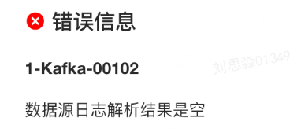
出现该处报错时，组件输出为空，数据没法往下走了，Zeus编译和执行过程没有报错。用户需检查下是不是自己配置的代码里try catch错误了
3.日志中心为什么看不到我配置的kafka topic中的某个字段
归因：业务方在日志中心没有配置相应的字段，导致该字段被过滤掉了，查询不到
日志中心使用文档参考：http://logcenter.test.data.sankuai.com/docs/brief_intro.html
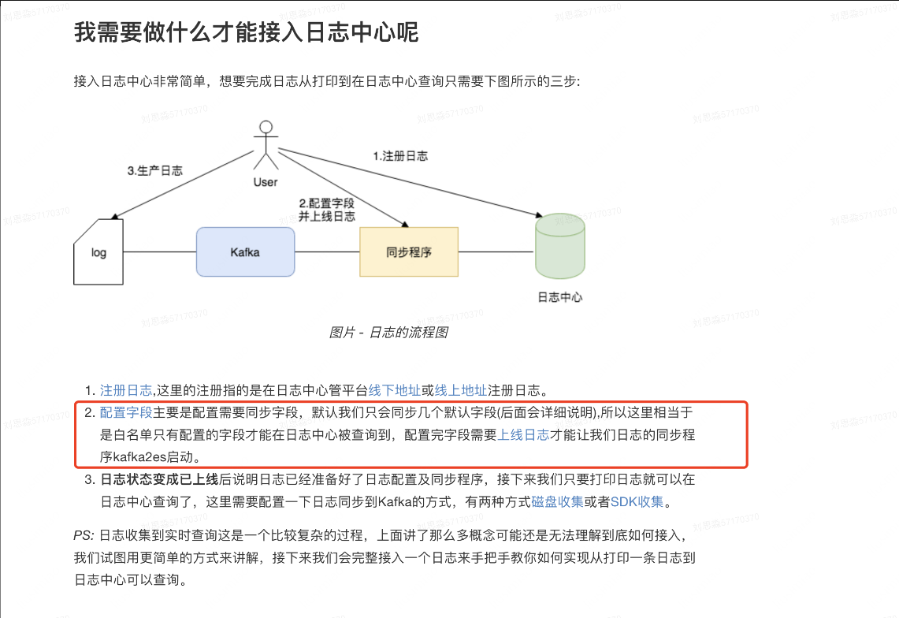
4.我最近修改了某个画布的内容，点保存的时候出现了我没有修改的组件的报错怎么办
归因：2022年7月画布上线了布控自助专项，其中对于绝大部分组件的填写内容进行了校验，导致在该需求上线前能够正常运行的画布在修改后因为无法通过校验的问题而出现报错无法保存。详细校验内容可参照上方每个组件的配置方式说明
解决方法：当前组件的校验能规避线上运行过程中出现的一些问题。尽可能的根据提示修改组件内容，若有特殊情况无法修改，可提tt至rd辅助修改
5.想要使用画布或体验画布，如何操作？
目前只面向信安下的风险团队提供该功能，需要具备Zeus上的空间权限（businessid），支持按照空间开通。开通后可在Zeus-测试环境体验。具体操作流程见 3.1 事前准备部分
交流👉 进群